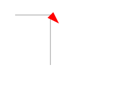
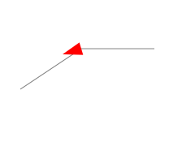
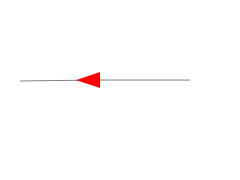
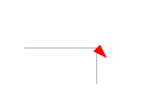
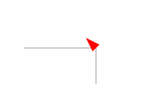

显式角度参考

每对左图为auto实际PNG，右图为按入射和出射单位向量角平分线给定的显式角度PNG。

<svg xmlns="http://www.w3.org/2000/svg" width="240" height="180"><rect width="240" height="180" fill="white"/><defs><marker id="m" markerWidth="32" markerHeight="24" viewBox="-4 -12 32 24" refX="0" refY="0" markerUnits="userSpaceOnUse" orient="auto"><path d="M0 -8 L24 0 L0 8Z" fill="red"/></marker></defs><path d="M30 30 L100 30 L100 130" fill="none" stroke="gray" marker-mid="url(#m)"/></svg>


<svg xmlns="http://www.w3.org/2000/svg" width="240" height="180"><rect width="240" height="180" fill="white"/><defs><marker id="m" markerWidth="32" markerHeight="24" viewBox="-4 -12 32 24" refX="0" refY="0" markerUnits="userSpaceOnUse" orient="auto"><path d="M0 -8 L24 0 L0 8Z" fill="red"/></marker></defs><path d="M190 60 L100 60 L25 110" fill="none" stroke="gray" marker-mid="url(#m)"/></svg>


<svg xmlns="http://www.w3.org/2000/svg" width="240" height="180"><rect width="240" height="180" fill="white"/><defs><marker id="m" markerWidth="32" markerHeight="24" viewBox="-4 -12 32 24" refX="0" refY="0" markerUnits="userSpaceOnUse" orient="auto"><path d="M0 -8 L24 0 L0 8Z" fill="red"/></marker></defs><path d="M190 80 L100 80 L20 81" fill="none" stroke="gray" marker-mid="url(#m)"/></svg>


<svg xmlns="http://www.w3.org/2000/svg" width="240" height="180"><rect width="240" height="180" fill="white"/><defs><marker id="m" markerWidth="32" markerHeight="24" viewBox="-4 -12 32 24" refX="0" refY="0" markerUnits="userSpaceOnUse" orient="auto"><path d="M0 -8 L24 0 L0 8Z" fill="red"/></marker></defs><path d="M160 140 L160 80 L40 80" fill="none" stroke="gray" marker-mid="url(#m)"/></svg>
{
"source": "/Users/lichao/Desktop/xpert/user-feedback/runs/replay-recovery-20261118/recover-20261118-5747-marker-direction/local-frozen-source/cairosvg/__init__.py",
"tests": 4,
"passed": 3,
"failed": 1,
"checks": [
{
"name": "right-down",
"expected_angle_degrees": 45.0,
"changed_pixels": 0,
"passed": true
},
{
"name": "left-down",
"expected_angle_degrees": 163.15496623701011,
"changed_pixels": 0,
"passed": true
},
{
"name": "left-near-straight",
"expected_angle_degrees": 179.6419200272648,
"changed_pixels": 0,
"passed": true
},
{
"name": "up-left",
"expected_angle_degrees": -135.0,
"changed_pixels": 428,
"passed": false
}
],
"oracle": "normalized incoming plus outgoing vectors at a nondegenerate middle vertex; explicit orientation is the reference"
}